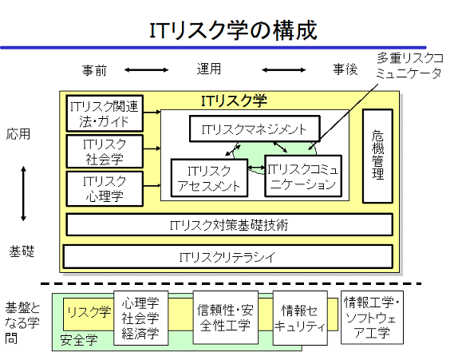

日本セキュリティ・マネジメント学会ITリスク学研究会の設立目的：
インターネットを含むITシステムへの依存度の増大により、安全性向上の要求がますます高まっています。
これらの安全性を考える場合、従来のセキュリティ技術のように意図的な不正だけを対象とするのではなく、天災や故障やヒューマンエラーのような偶発的な障害も対象とし、セキュリティだけでなくプライバシーやリライアビリティ、ユーザビリティなど種々の指標を考慮して適切な対応を可能にするITリスク学の確立の必要が増大してきています。
ITリスク学においては、ゼロリスクはないという基本認識の上に、定量的アプローチ、確率論的アプローチが不可欠であるとともに、ひとつのリスク対策が別のリスクを引き起こすという「リスク対リスク（多重リスク）」の時代への対応が必要となると考えています。
ITリスク学は、図１に示すように、（１）ITリスクマネジメント・アセスメント・コミュニケーションの総合的アプローチを中心とし、（２）ITリスク心理学、社会学、法学などや、（３）各種ITリスク対策技術、（４）対策がうまくいかなかった場合の危機管理対策、さらには、（５）ITリスクリテラシーなどを研究対象とします。

図１ リスク学概要
最低、年4回の会合を行い、外部の講師の講演を聴くとともに、会員が発表を行うことにより、ITリスク学の確立を図る予定です。
東京電機大学
佐々木良一
2008年10月04日(土）第二回リスク学研究会を実施することになりました。ふるってご参加ください。
詳しくはこちらをご覧下さい。
|